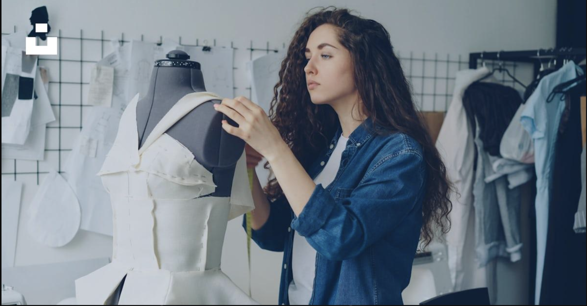
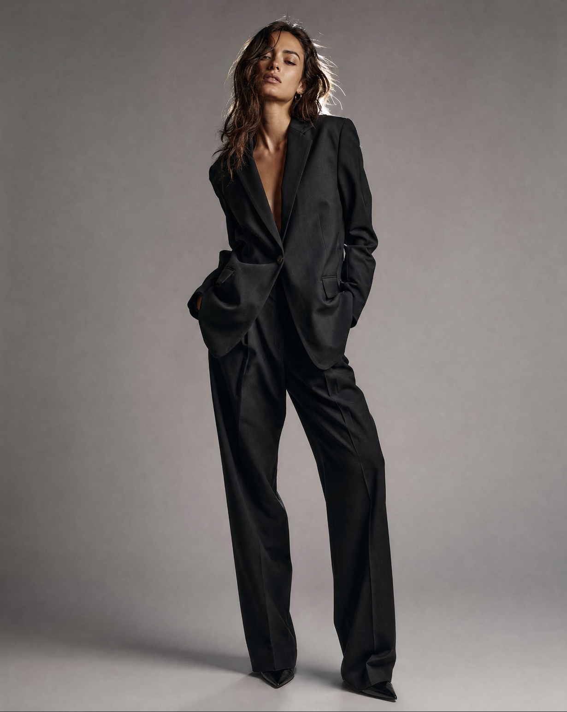
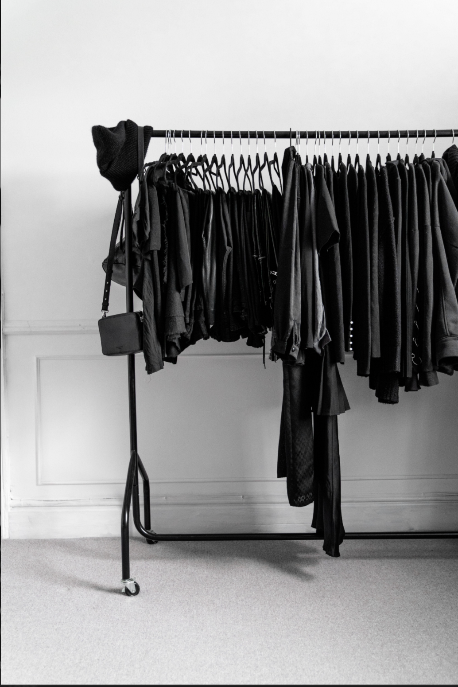

Who We Are

Nyra was created with a simple vision: To bring confidence, creativity and timeless style into everyday fashion and our collections to combine modern trends with classic elegance.

Every great story begins with a dream, and Nyra was no exception. What started as a passion for fashion, creativity, and self-expression slowly grew into something bigger. Inspired by timeless elegance and the belief that clothing can transform the way we feel, Nyra was born from the desire to create a space where style has no limits. From the very beginning, our goal was simple: to make every individual feel confident, empowered, and effortlessly stylish.
From A Dream To A Vision

Nyra began with a small idea and a big ambition. With every collection, every design choice, and every detail, that initial dream started to take shape. What once existed only as an inspiration became a brand built around individuality, modern sophistication, and timeless fashion. Today, Nyra continues to evolve, embracing new ideas while staying true to the passion that started it all. And this is only the beginning of our story.

We believe great style should feel effortless. From statement outfits to everyday essentials, our philosophy is build around confidence, versatility and personal expression.
Discover Nyra

Find pieces that reflect your personality. Explore the Nyra collection and redefine your style.